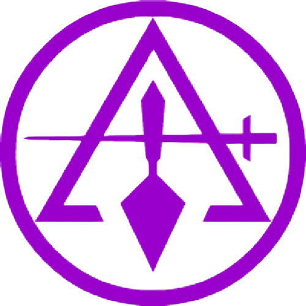

"La Verdad se busca con la razón, la libertad se construye con la fraternidad."

El Consejo de Masones Críticos es una institución filosófica y fraterna fundada sobre los principios del libre pensamiento, la razón crítica y la búsqueda permanente de la verdad. Nos distanciamos del dogma para abrazar el conocimiento.
Nuestros trabajos se orientan al perfeccionamiento moral del ser humano, la defensa de la laicidad, la fraternidad universal y el estudio riguroso de las tradiciones iniciáticas desde una perspectiva racional y científica.
Somos herederos de las corrientes ilustradas y reformistas de la masonería, comprometidos con la tolerancia, la democracia y el progreso del pensamiento libre.
El pensamiento crítico como único instrumento válido de conocimiento.
El estudio continuo de las artes, las ciencias y la tradición iniciática.
El vínculo indisoluble entre hermanos que trasciende fronteras.
La búsqueda de la verdad como horizonte permanente del Masón.
Un grupo de intelectuales masones fundó el Consejo bajo los principios del librepensamiento y la razón ilustrada.
El Consejo adoptó formalmente los 33 grados con una interpretación filosófica y científica del simbolismo.
Se establecieron tres logias dependientes en diferentes regiones del Oriente bajo nuestra jurisdicción.
El Consejo mantiene su labor iniciática con plena vigencia, abierto a quienes buscan la luz con espíritu crítico.
El inicio del camino. El hermano aprende a escuchar, observar y trabajar sobre la piedra bruta de su propio carácter.
El Masón comienza a estudiar las ciencias, las artes y profundiza en el simbolismo de las herramientas iniciáticas.
La muerte simbólica y resurrección. El Maestro Masón ha conquistado la comprensión del misterio de la existencia.
Profundización en la filosofía masónica, la historia de los constructores y la arquitectura moral del ser.
El estudio de las tradiciones herméticas, la alquimia filosófica y el pensamiento esotérico occidental.
Reservados a los Maestros que han consagrado su vida a la labor fraternal, filosófica y al servicio del Consejo.
Primera logia azul del Consejo, fundada en 1888. Trabaja los tres grados simbólicos con enfoque filosófico y debates críticos.
Especializada en los grados capitulares y la formación intelectual masónica. Centro de conferencias y debates filosóficos.
Logia de grados filosóficos y trabajos de alto grado. Reúne a Maestros consagrados a la investigación y la transmisión del saber.
"El Masón Crítico no acepta verdad alguna por autoridad; la somete al examen de la razón y sólo reconoce como legítimo lo que puede ser justificado ante el tribunal del pensamiento libre."— Constitución del Consejo, 1888
Todo hombre tiene el derecho y el deber de pensar por sí mismo. El dogma, sea político o religioso, es el mayor obstáculo para la perfección moral y el progreso de la humanidad.
En el Templo no existen jerarquías de sangre, fortuna ni credo. Sólo el mérito intelectual y moral distingue al hermano que ha labrado con más ahínco su piedra.
El vínculo masónico es universal. Los hermanos se reconocen más allá de la nación, la raza o la lengua, unidos por el compromiso compartido con la verdad y el bien.
Una noche de reflexión filosófica sobre los orígenes y la evolución del rito, conducida por el Venerable Maestro del Consejo.
El camino hacia la Luz comienza con una pregunta sincera. Si eres hombre libre y de buenas costumbres, te invitamos a presentar tu solicitud.